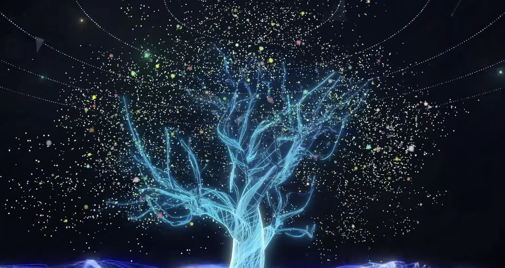
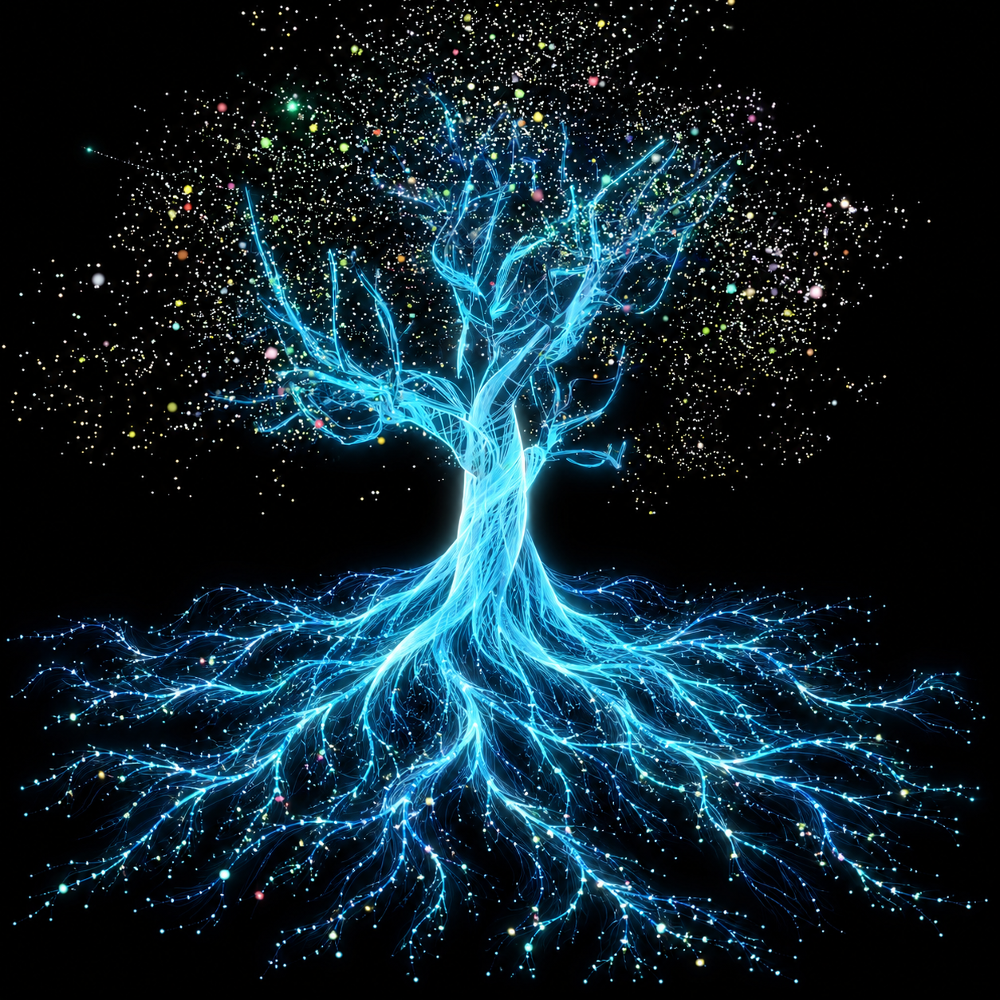

实际使用的原图与允许的补充区域
三张 JPEG 是原样复制，SHA256 校验通过；补图单独存放。主应用采用原图网格动画，不把生成图片的整个主体替换进去。
蝴蝶原图：主体完整。使用原有两侧翅膀与身体，无镜像补齐。花朵原图：两侧和上沿流光存在裁切。中心与主体花瓣保留原图。
树木原图：顶部树冠与底部树根不完整。原有枝干保留；舞台地面亮带在背景分离时抑制。
单独保存的扩展素材
花朵补图：仅外围采样，原图中心覆盖其上。这是补绘素材，不能称为全部原样保留。
树根补图：只使用下方根部，原图枝干与树冠从原 JPEG 读取。上半部生成的树不会用于替代原树。返回体验